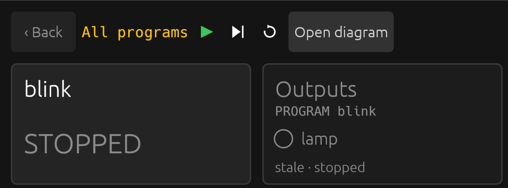
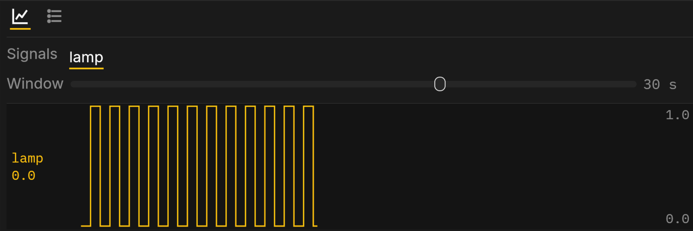

The simulation
The simulation runs the controller inside the page, scan by scan, against inputs you set yourself. It is what the playground is, and what a box's page falls back to when no box answers.
Running
A project opens running. The glyphs over the diagram run or stop it (Ctrl Enter; Shift F8 stops), step one scan while stopped (F10), and restart from initial values with the clock at zero. The same three buttons and keys are in the Monitor's header. The state in the header says which it is; the clock beside it is the program's own time.

One program runs in the page at a time. Opening or deploying another stops the one before.
Breakpoints
Pick a block in the diagram and press Ctrl B (or Edit › Breakpoint): a red dot marks it. The next scan that reaches the block stops just before it runs, the simulation stops with it, and the diagram and every value show the scan as it stood at that moment. The block is framed in orange and the notice under the header names its line. F10 runs the rest of that scan. Ctrl Enter goes on to the next stop: the same block's next pass in a loop, another breakpoint, or the next scan. An input you change while stopped shows at once in what the diagram shows. A breakpoint inside a function block stops in every instance of it. Ctrl B on the block again clears it. Stopping at a breakpoint changes nothing the program does: the scan runs exactly as it would have.
Editing
Type in the Structured Text pane. The editor checks what you typed after a short pause and marks any error on its line; the diagram and the program running stay as they were. Deploy (Ctrl D) compiles your text and runs it, if it compiles. If it does not, the errors are listed under the editor, a click on one goes there, and the last good program keeps running.
Undo and Redo (Ctrl Z, Ctrl Y) work in the editor and from the Edit menu.
Ctrl F opens a find box over the Structured Text. Every match is marked in yellow, the current one brighter, and the pane scrolls to it; the box counts them. Enter or Ctrl G goes to the next match, Shift Enter or Ctrl Shift G to the previous one, and letters match in either case, as Structured Text does. Esc closes the box and leaves the match selected in the editor. It works the same on a box's code.
Inputs
Every input of the program has a control: on the diagram, where the program reads it, or in the I/O panel for the ones the diagram does not show.
- A BOOL input the program reads once in a while is a switch: click to flip. It shows TRUE in green, FALSE in red.
- A BOOL input the program reads as a button (
start_pb,stop_pb,ack_pb) is a push button: on while you hold it. - A number takes what you type; Enter or leaving the field commits it, Esc puts the old value back. The I/O panel's sliders apply as you drag.
With an input's block picked, Ctrl Shift F flips a switch or opens a number's field, so you can set inputs without the mouse.
A project can carry a plant model, a block that stands in for the tank, the belt or the compressors, so that it moves with nothing wired.
The trend
The Trend tab along the bottom plots the signals you pin, up to six, each in its own lane with its last value. The Window slider sets how much of the past the pane shows, from 100 ms to 10 minutes on a logarithmic scale, and the plot follows as you drag; history is kept for the widest, so widening shows what already ran. The lane's scale is at its right edge: it rounds out to an even step and moves only when the values cross one. Pin from the tab's list. History restarts when you change the set.

Faults
A program that divides by zero, runs past its watchdog, or writes an
output out of range faults: it stops at the statement
that did it, outputs go to their safe values, the state reads
faulted in red and the Messages tab records what happened.
Run or Step restarts it.